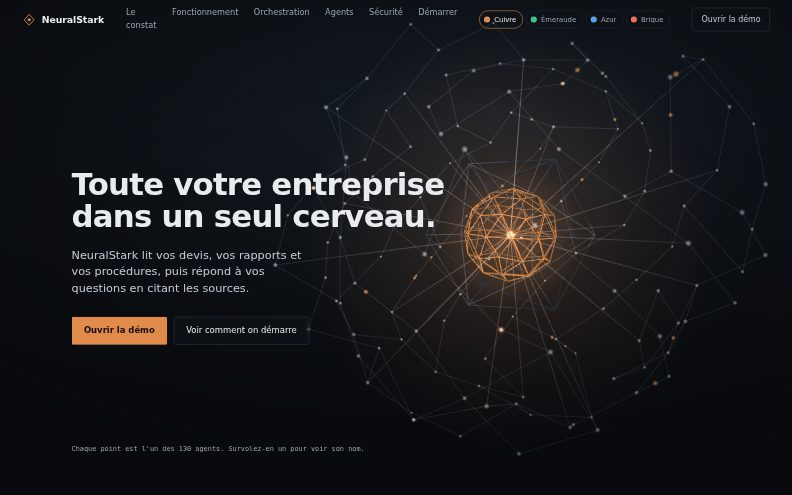
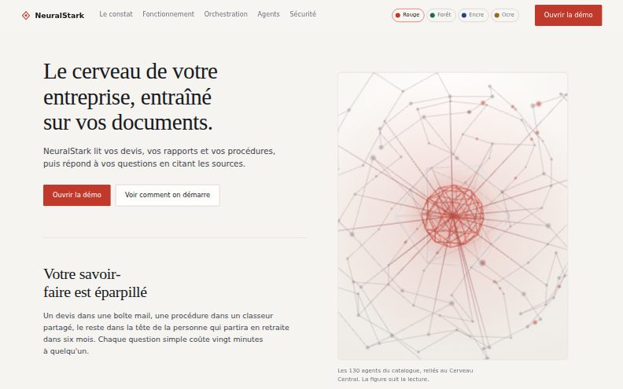
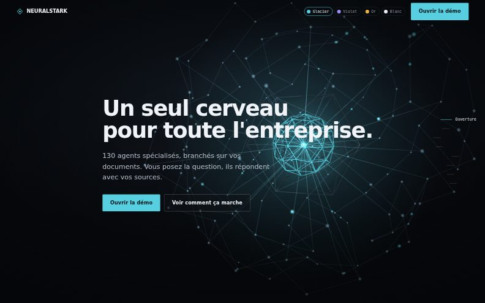

Trois modèles, à vous de choisir
Même produit, mêmes textes, même démonstration de routage en direct. Ce qui change, c'est la mise en scène et la lumière. Chaque modèle se décline en quatre couleurs, commutables dans sa barre du haut.
-

Atelier
Sombre, dense, le cerveau occupe tout l'écran derrière le texte. La 3D accompagne la lecture sans jamais la prendre en otage.
- Le plus proche de ce qui est en ligne aujourd'hui
- Beaucoup d'informations par écran, bon pour convaincre un lecteur attentif
- Registre atelier technique, matière graphite
Cuivre Émeraude Azur Brique
Voir le modèle Atelier -

Studio
Clair, papier mat, titres en romain. Le cerveau est tenu dans un cadre qui reste en place pendant que le texte défile, comme une planche technique dans un dossier.
- Rassurant pour un client institutionnel, une régie, une fiduciaire
- Excellente lisibilité, y compris à l'impression
- La 3D devient une illustration maîtrisée, pas une ambiance
Rouge Forêt Encre Ocre
Voir le modèle Studio -

Cinéma
Un écran, une affirmation. Les sections occupent toute la hauteur, la 3D passe au premier rôle et le texte se réduit à ce qui frappe.
- Le plus spectaculaire, idéal en salon ou en projection
- Peu de texte : à réserver aux prospects qu'on rencontre ensuite
- Rail de chapitres pour naviguer sans défiler
Glacier Violet Or Blanc
Voir le modèle Cinéma
Une fois votre choix fait
Dites-moi le modèle et la couleur. Le modèle retenu remplace la page d'accueil du site, les deux autres restent consultables ici tant que vous n'avez pas tranché.
La page d'accueil actuelle reste en ligne pendant la comparaison : voir le site tel qu'il est aujourd'hui.